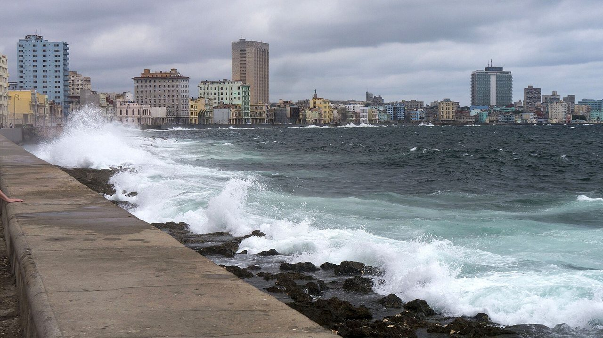

Race, Havana Malecón

Behind
Best +0:01
371W
Target 418 W-47 W
- Cadence
- 87rpm
- Heart
- 140bpm
- Speed
- 26.5km/h
Recover3 of 16
0:30
Next: · 0:30 at level 24
+0.1%
3 m climbed
1.45 km
10
Resistance / 32
Solo races your best-time ghost: position reads Ahead or Behind, and solo alone gets a Pause button. Frozen at 3:30.